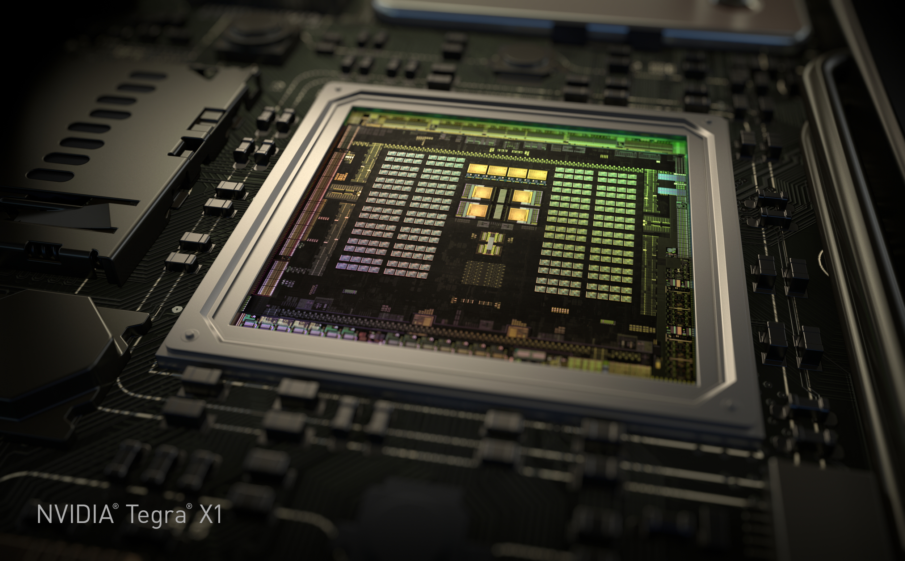
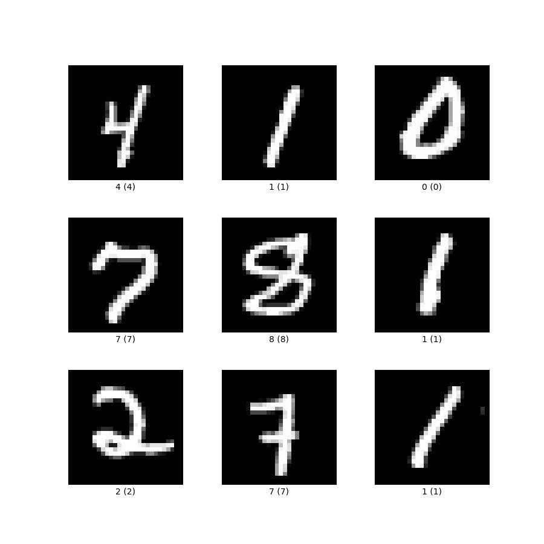

GPU
What is a GPU
Read moreAn introduction into making a GPU do more than just display pretty pixels
A central processing unit, or CPU, is the brain of the computer. Its job is to do as much as it can, sequentially, whilst also orchestrating what other components of the computer do.
The problem however stems from the fact that it's good at doing everything. It might seem counterintuitive that something with such generality would struggle to compute something, but that generality is what holds it back. Every one of the few cores it has is designed in such a way that it can do a lot of things. And because of that they end up being incredibly large, thus, not many can fit on a die. Not to mention the heat and power requirements that come with cores that can handle all sorts of tasks.
By comparison, a GPU has thousands of simple cores. Their job is strictly to do math, as fast as possible and as parallel as possible. They lack the advanced control logic that CPU cores have, but what they get in return is being able to execute the same instruction across batches of data simultaneously.
GPUs were initially made because rendering millions of pixels, especially at high throughput and with per pixel effects, was incredibly costly for CPUs. Plus, pixels are quite simple: the color of a pixel can be calculated almost completely independently from the pixel next to it. Meaning we needed something that could do raw compute fast independent of what other cores are doing.
But what if we take that parallel compute together with being able to execute the same thing over and over again across different batches of data? We get general purpose computations on graphics processing units.
The name would suggest that it can replace a CPU, but that couldn't be further from the truth. Because when we're talking general purpose, what we instead mean is that it can do more than just process pixels. Say... process arbitrary information as numeric representations.

What is a GPU
Read moreWhat does General Purpose mean
Read more
Making a GPU learn what numbers are
Read moreSeeing it in action
Read more